1Getting started
ARCadeOS is the operating system of the ARCade cabinet by DIY Engineering. It turns the cabinet into a single, controller-first machine: every arcade board, pinball table, console and PC game you own in one place, with artwork, attract video and music — and never a Windows desktop in sight.
You do not need a keyboard or a mouse. Everything in this manual can be done from the joystick and buttons on the cabinet. Your cabinet arrives set up and ready to play, so if you just want to start a game, read section 2 and go. The rest of the manual is here when you want to add games, change how the cabinet looks and sounds, or look after it.
The main screen
This is where you will spend most of your time. Everything is laid out around the game you have currently highlighted.
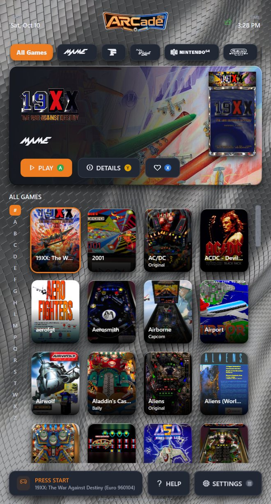
1 2 3 4 5 6 7 8- 1 Date and time. An ARCade Share icon and a mute icon appear on the right when relevant
- 2 Category tabs: systems, genres and collections
- 3 Hero card: the highlighted game, with its preview video playing in a cabinet frame
- 4 Play, Details and Favourite (plus Play Online on supported games)
- 5 A–Z jump bar
- 6 The game grid
- 7 Press Start card: the game that will launch
- 8 Help and Settings
The setup wizard
The first time a cabinet starts, a ten-step setup wizard runs. Move between steps with Next and Back (or B to step back). Most steps are optional; press Next to skip anything you want to do later.
- Welcome to ARCadeOS. A short legal note: ARCadeOS is a game launcher, and you should only add content you own.
- Connect to the internet. Pick your Wi-Fi network from the list and type its password with the on-screen keyboard. Hidden network… lets you type a network name that is not broadcast; Other networks… opens the Windows Wi-Fi panel for unusual cases such as a hotel or workplace sign-in page. If the cabinet is cabled to your router you can skip this step.
- What makes ARCadeOS great. A one-screen tour of what the cabinet can do.
- Choose your experience. Pick the Appearance (follow Windows, light or dark) and whether you want the Full multimedia experience: navigation sounds, jukebox music, launch videos and a background video. Turn it off for a quiet, plain interface; everything can be fine-tuned later.
- Your Steam library. Sign in to Steam once and your installed Steam games appear in ARCadeOS automatically.
- Game artwork. Optionally paste a free SteamGridDB key, and choose whether to use the LaunchBox artwork database (a one-time download of about 100 MB) for wider artwork coverage.
- Christen your cabinet. Your cabinet is given a name with a slot-machine spin. Press Roll again until you find one you like. The name is permanent: it is how your cabinet introduces itself to other ARCade cabinets.
- ARCade Share. Choose whether to switch on ARCade Share now. You can change this at any time.
- Add your games. Shows the cabinet’s import folder and confirms the artwork database is ready. See section 5.
- Thank you. Press Finish and the library opens.
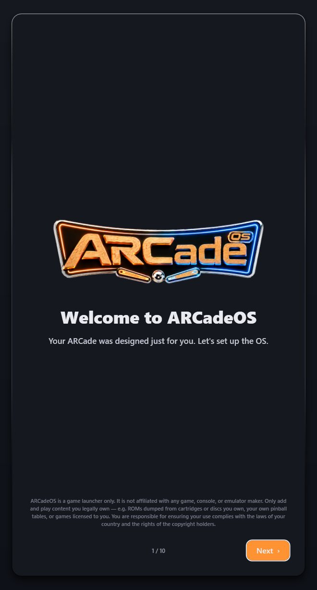
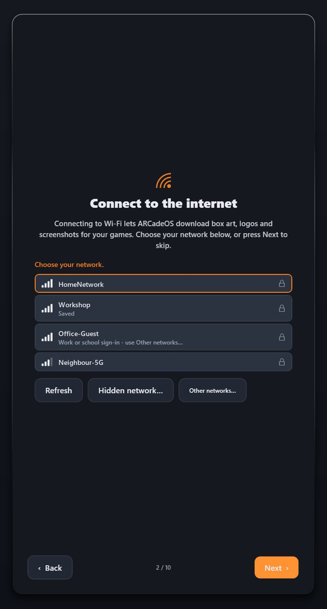
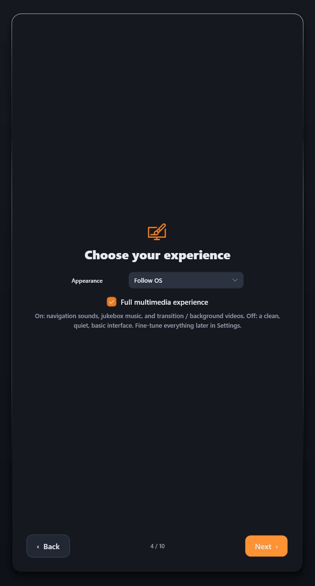
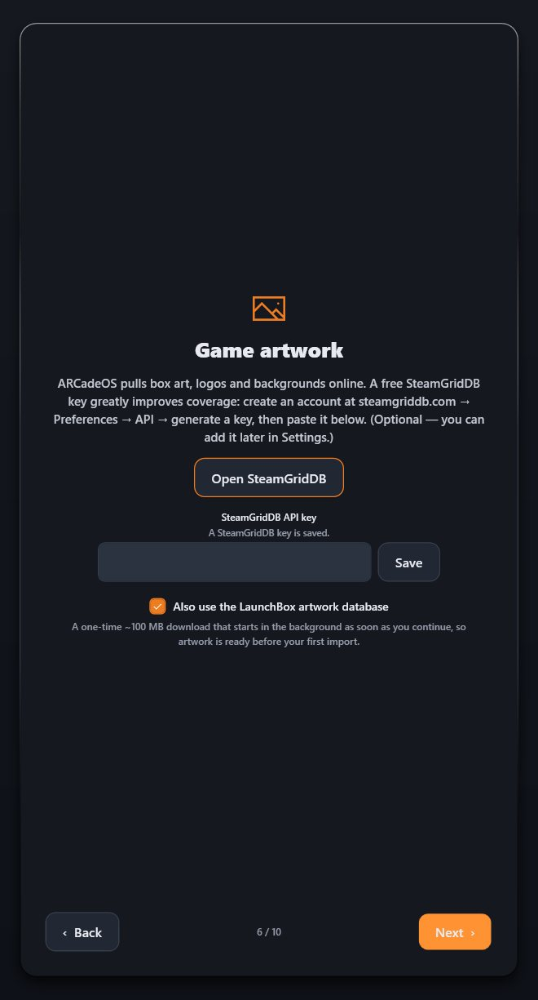
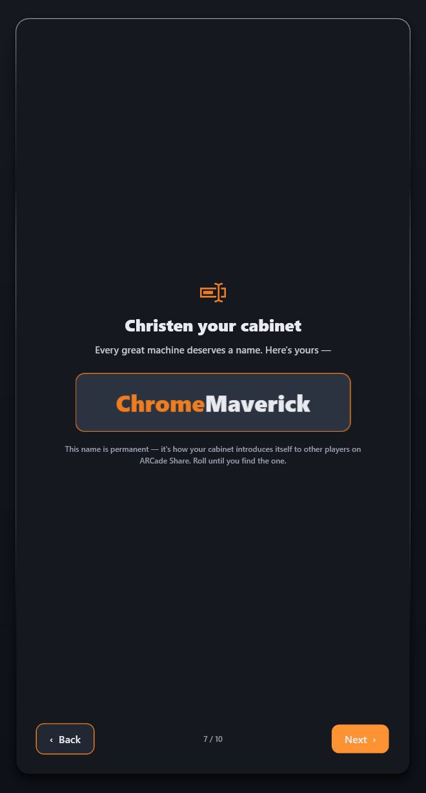
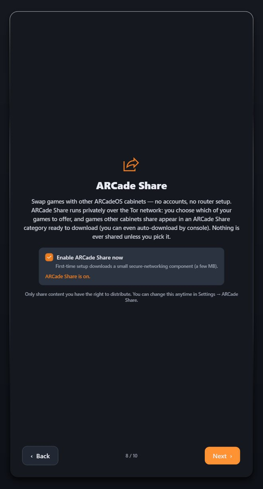
You can run the wizard again at any time from Settings → System → Advanced → Run setup wizard. Re-running it erases nothing, and your cabinet keeps its name.
Startup tips
A few seconds after ARCadeOS starts, a tip slides up at the bottom of the screen with a shortcut or feature you may not have found yet. There are twenty, shown in turn, so you see a different one each time. It disappears by itself after about ten seconds; press any button (or B) to dismiss it sooner. Turn tips off in Settings → Display.
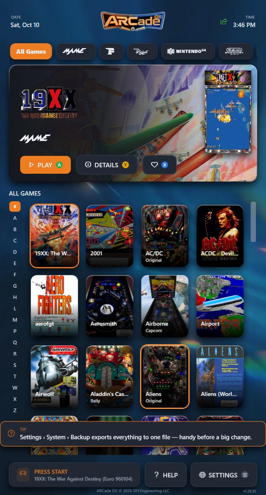
2Your controls
Every screen in ARCadeOS is built for a joystick and buttons first. The same handful of controls works everywhere, including inside Settings.
Button reference
Your cabinet’s control panel presents itself to Windows as an Xbox controller (see section 9), so ARCadeOS names its buttons the Xbox way. These are the defaults:
| Button | What it does | Keyboard |
|---|---|---|
| A | Launch / Select. Activates whatever is highlighted. On a game tile it moves you to the Play button; press A again to start the game. | Enter |
| B | Back. Leaves the current screen, closes a card, answers “No” to a question, or returns to the grid. | Esc / Backspace |
| X | Favourite. Adds or removes the highlighted game from Favourites. | F |
| Y | Details. Opens the game’s details screen. | I |
| Start | Settings. Opens Settings from anywhere. Also the Start game button inside games. | S |
| Back / Select | Mute. Silences and un-silences everything instantly; a speaker icon shows while muted. Also the Insert coin button inside games. | M |
| LB / RB | Previous / next category tab. Inside a long card (Settings, Help, a report) they scroll a page at a time. | Q / E |
| LT / RT | Previous / next music track while you browse. | Media keys |
| D-pad / stick | Move around the grid, the tabs, the A–Z bar and every menu. Held directions repeat. | Arrow keys |
| unassigned | Play online. Opens online play for a supported game. Assign it a button in Settings → Controls → Menu navigation if you use it often — otherwise use the Play Online button on screen. | O |
| unassigned | Help. Opens Help & Controls. Use the Help button on screen, or assign it a button. | H |
| Start + Back (hold) | Quit the running game. On the main screen it offers to shut the cabinet down. | — |
Moving around screens
- In the grid, push up from the top row to reach the hero card, then the tabs. Push down from the bottom row to reach Help and Settings. Push left from the first column to reach the A–Z bar.
- In any card (Settings, the importer, an editor): up / down moves between items; left / right changes a slider or a drop-down list without opening it; A presses a button, ticks a box or opens a list; B closes the card. With a list open, B closes just the list.
- In a file or folder browser, A opens a folder or picks a file, left goes up a folder, and B cancels.
- Setting a button (any “Press…” box): press the button or key you want. If you change your mind, just wait — it cancels itself after ten seconds. B is not a cancel here, because B is a button you may want to assign.
Quitting & power
Once you are inside a game, ARCadeOS steps aside. Hold Start and Back together to quit and come straight back to your library. This works in every arcade emulator, console emulator and pinball table. You can choose a different pair in Settings → Controls → Coin, Start & Exit.
Hold the same two buttons on the main screen and ARCadeOS asks “Shut down the system now?” — choose Shut down or Cancel. Restart, sleep and shut down are also in Settings → System → Power. If ARCade Share is still downloading something, ARCadeOS warns you first and offers Keep downloading.
On-screen keyboard
Whenever you need to type — a Wi-Fi password, a nickname, an API key — highlight the text box and press A. An on-screen keyboard appears: move with the stick, press A on each key, Shift for capitals, &123 for symbols, ⌫ Back to delete, and Done when you are finished.
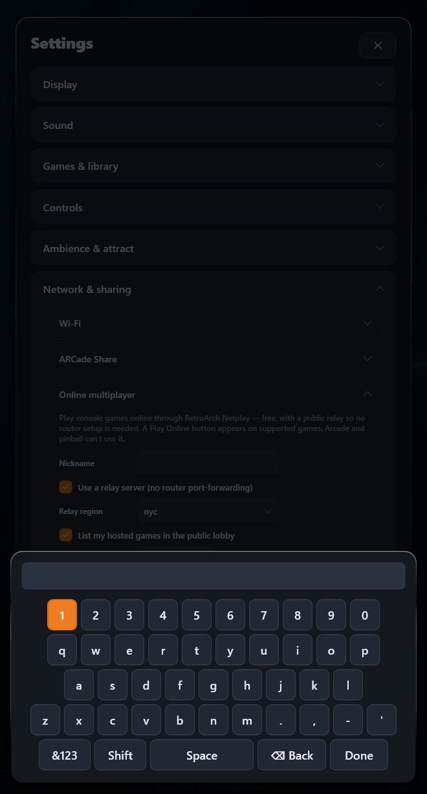
Help & Controls
The Help button at the bottom of the main screen opens a card with your cabinet’s current button map (including any changes you have made) and short how-tos for navigating, playing, music, importing, ARCade Share and customising the controls. Scroll it with the stick or LB/RB; close it with A or B.
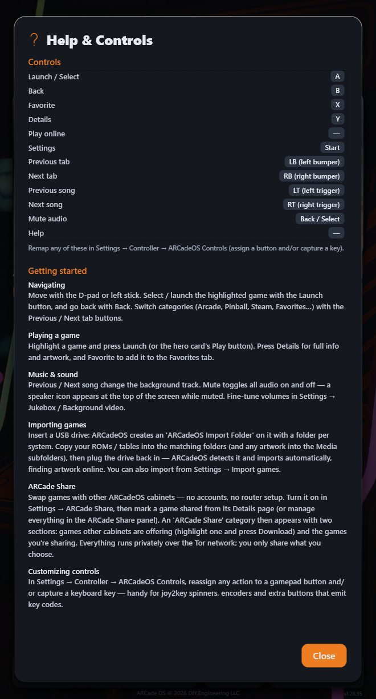
3Browsing your library
Categories & genres
The row of tabs across the top splits your library up. Move between tabs with the shoulder buttons (LB and RB) from anywhere — much faster than walking up to the tab row. The tabs wrap around, so LB on the first tab jumps to the last.
By default there is a tab for each system you own games for (MAME, Visual Pinball, Future Pinball, the consoles, Steam and your other launchers), plus:
- All Games — everything, A to Z.
- Favorites, Recent and Most Played — see below.
- ARCade Share — only when ARCade Share is switched on.
Prefer to browse by the kind of game? Set Settings → Display → Tab mode to Genre. The system tabs are replaced by genre tabs: Classics (golden-age arcade games from 1984 and earlier, which also stay in their own genre), Fighters, Beat ’em Ups, Shmups, Shooters, Platformers, Action, Maze, Racing, Sports, Puzzle, Adventure, RPG, Simulation, Strategy, Pinball, Casino & Cards, Music, Quiz — and Other for anything ARCadeOS can’t place. Only genres you actually have games in are shown. If a game lands in the wrong genre, fix it in its Edit card.
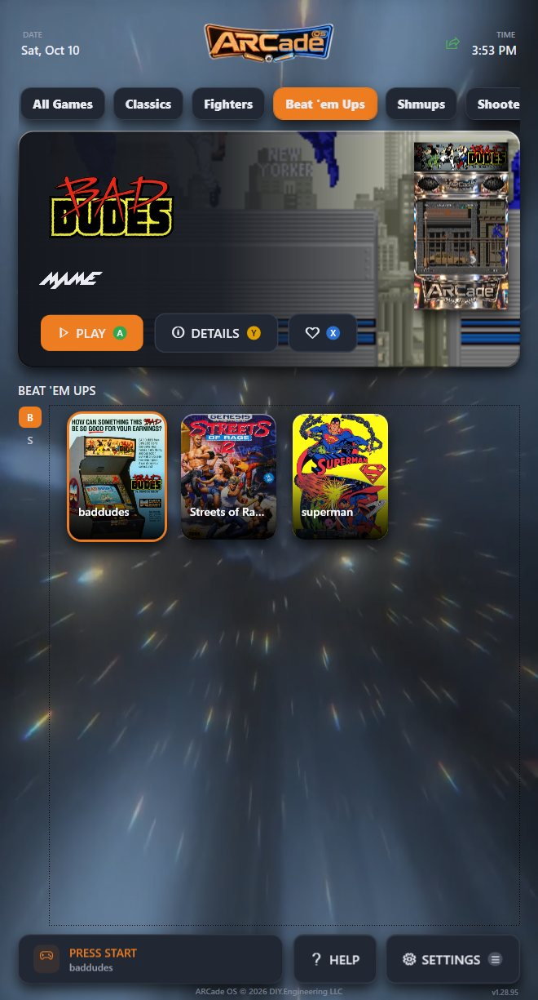
Tabs can show a platform logo, a name, or both: Settings → Display → Platform tabs.
The hero card
The large card above the grid always follows the game you have highlighted. It shows the game’s logo, year, maker and number of players, and plays its preview video — silently, inside the same cabinet frame (bezel) the game will use when it runs. Its buttons are Play, Details and the heart (favourite), plus Play Online on games that support it. The small letter on each button is the controller button that does the same thing, and it follows any changes you make to your controls.
The A–Z jump bar
The narrow strip of letters down the left edge is the fastest way through a large library. Push left from the first column of the grid to hop onto it, move up and down to a letter, then press right or A to drop back into the grid at that letter. # covers titles that start with a number or symbol. The bar only lists letters you actually have games for, so there are no dead stops.
Favourites & history
Press X on any game to favourite it — a heart appears on its tile and it shows up immediately in the Favorites tab. Press X again to remove it.
Recent and Most Played build themselves as you play; you never have to curate them.
To choose which tab ARCadeOS opens on, use Settings → Display → Opens on — pick a tab, or (Last used) to carry on where you left off.
Attract mode
Leave the cabinet alone for a while (five minutes by default) and it goes into attract mode, just like an arcade machine on location. It plays the preview videos of your games full-screen, framed by the cabinet bezel and topped with each game’s marquee, in a shuffled order. If none of your games have preview videos it shows a slideshow of their artwork instead.
Press any button to come back. That first press only wakes the cabinet — it never launches anything by accident. Attract mode never starts while a card or menu is open. Change the delay, or turn it off, in Settings → Ambience & attract → Attract mode.
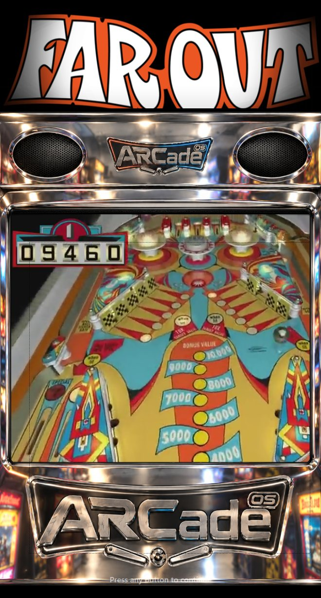
4Playing games
Launching & quitting
- Highlight a game in the grid.
- Press A to move to Play, then A again.
- A short launch video plays while ARCadeOS starts the right emulator with the right settings for that game, and — on cabinets with a joystick restrictor — switches the joystick to 4-way or 8-way. Nothing to configure.
- Insert coins with Back and start with Start, as on an arcade machine.
- To come back, hold Start and Back together.
If a game cannot start because something is missing — an emulator, a core, a BIOS file — ARCadeOS tells you what is missing instead of failing silently, and offers Open Systems to fix it. See systems readiness.
The details screen
Press Y on any game for its full page: box art, logo, title, year, maker, number of players, genre, joystick type and description.
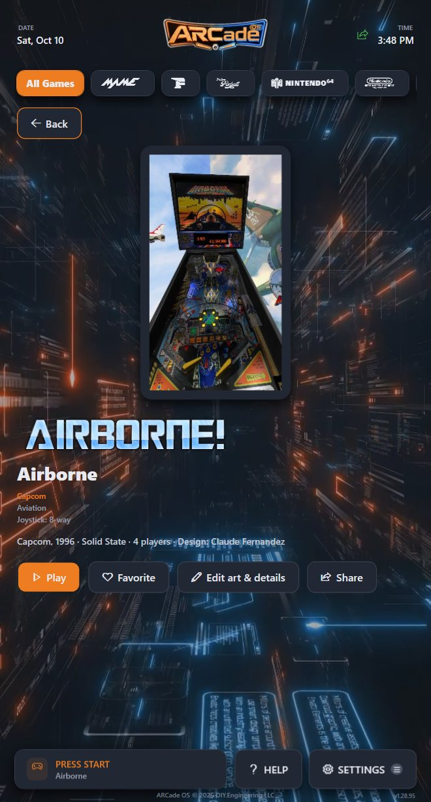
| Button | What it does |
|---|---|
| Back | Returns to the grid (or press B). |
| Play | Starts the game. |
| Play Online | Only on games that support online play. See Playing online. |
| Favorite | Adds or removes the game from Favourites. |
| Edit art & details | Opens the game’s Edit card — see below. |
| Share | Offers this game to other cabinets over ARCade Share. Shows Shared ✓ once it is offered. Only appears when ARCade Share is on. |
Editing a game
Edit art & details opens a card with everything ARCadeOS knows about the game, in folding sections. Changes are saved as you make them; press Done when you are finished.
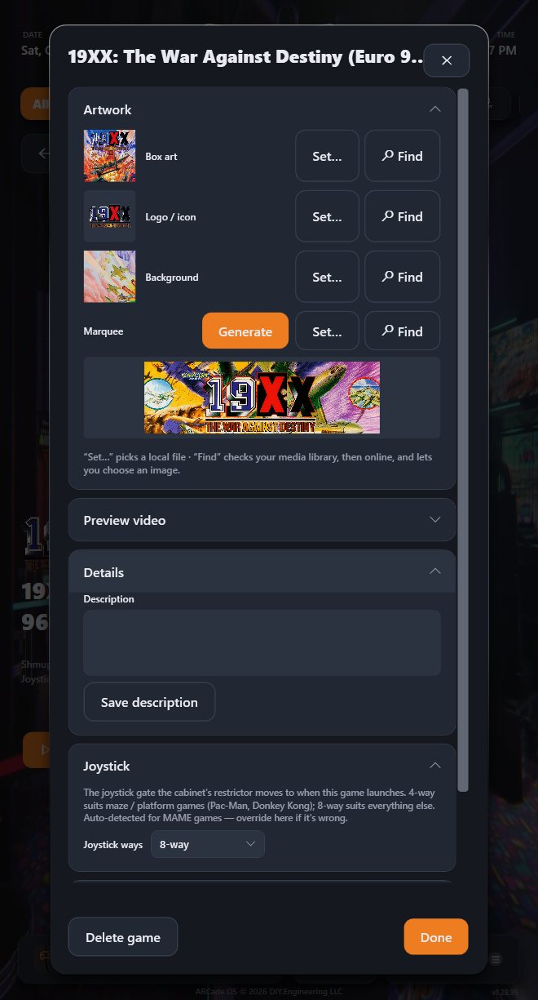
| Section | What it is for |
|---|---|
| Artwork | The game’s Box art, Logo / icon, Background and Marquee. Set… picks an image file; Find looks in your media library and then online, and shows a grid of choices to pick from. For the marquee, Generate builds one from the game’s logo and art. Use this when an automatic match picked the wrong regional release. |
| Preview video | The clip that plays on the hero card and in attract mode. Set… or Clear, plus the global preview volume. |
| Details | Edit the description, then Save description. |
| Joystick | Joystick ways: 4-way or 8-way. The gate the cabinet’s joystick restrictor moves to when this game launches. 4-way suits maze and climbing games (Pac-Man, Donkey Kong); 8-way suits everything else. ARCadeOS detects this automatically for MAME games — change it here if it is wrong. See Joystick restrictor. |
| Genre | Which genre tab the game appears under in Genre tab mode. Automatic shows the genre ARCadeOS worked out; pick another to override it. |
| Launch options | Advanced, emulator games only: Extra arguments added to the emulator’s command line, a Custom command override, and a Working directory. Save launch options applies them; Reset to default undoes them. |
| Delete game | Removes the game from the library. The game file itself is left on disk, so you can import it again later. |
Playing online
Console games run through RetroArch can be played online with a friend on another cabinet or PC. A Play Online button appears on the hero card and details screen of every game that supports it. Arcade (MAME) games and pinball tables cannot be played online.
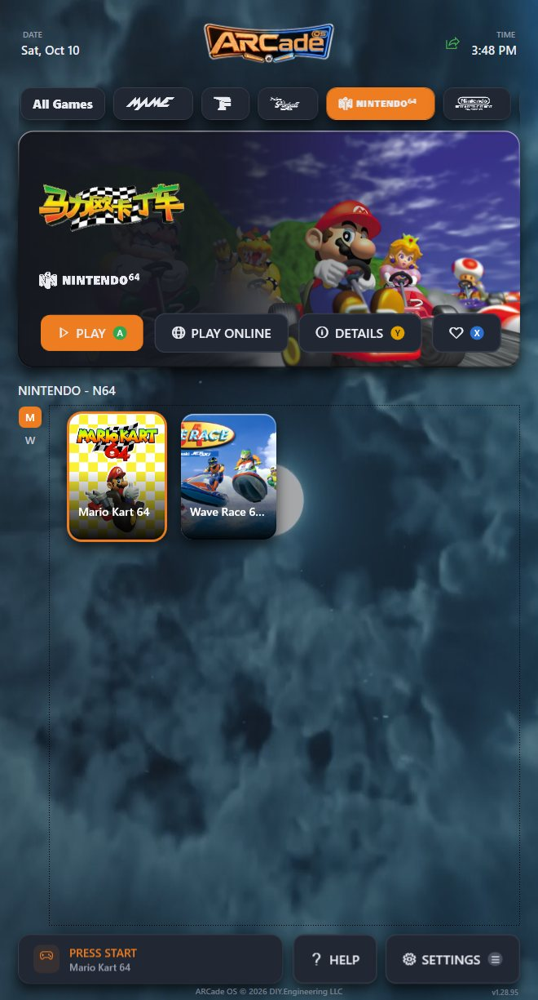
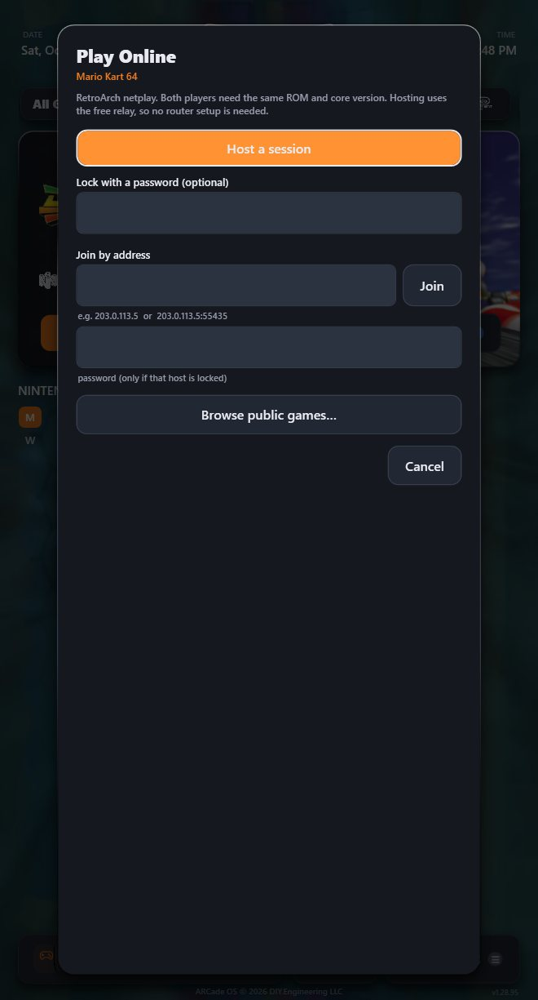
- Host a session starts the game and waits for a friend. Add a password under Lock with a password if you want to keep it private. Your hosted game is listed in the public lobby unless you turn that off in Settings.
- Join by address connects to a friend who has given you their address (and password, if they set one).
- Browse public games… lists sessions that are open right now; pick one and press Join.
Both players need the same game file and the same emulator version. By default the connection goes through a free relay server, so there is no router configuration to do. Your nickname, relay region and lobby listing are in Settings → Network & sharing → Online multiplayer.
Music & sound
ARCadeOS can play jukebox music while you browse, a background video behind everything, a short video as each game launches, and quiet clicks as you move. The triggers skip music tracks; Back mutes everything at once. Every volume in the cabinet lives together in Settings → Sound, so you can balance them in one place, and music and background audio can fade out automatically while you play.
5Adding games
You supply the games; ARCadeOS does the presentation. It works out which system each file belongs to, finds artwork, descriptions and release details, and installs the emulator that system needs.
Only add games you legally own — for example ROMs dumped from boards, cartridges or discs you own, your own pinball tables, or games licensed to you.
From a USB drive (the easy way)
- Plug any USB drive into the cabinet. If the drive is blank, ARCadeOS asks Set up this USB drive? — choose Yes, set it up. It creates a folder called ARCadeOS Import Folder with a sub-folder for every system it supports.
- Take the drive to your computer and copy your games into the matching sub-folders. If you have your own artwork or videos, put them in the Media sub-folders.
- Plug the drive back into the cabinet. The importer opens by itself and scans it.
From a folder on the cabinet
Open Settings → Games & library → Open importer, choose Browse… to pick a folder (a drive you have already copied games onto, or a network share), and press Scan. The cabinet also has its own import folder; when the library is empty, a Scan for games button on the main screen scans it in one press.
Reviewing an import
After a scan, the importer lists what it found, grouped by system, each with a status badge. Use the platform filter, Select all and None to choose, then press Import N selected. When it finishes, Import Results shows which systems were set up and how complete each game’s artwork is (green, yellow or red). Re-scanning is always safe: games already in your library are skipped.
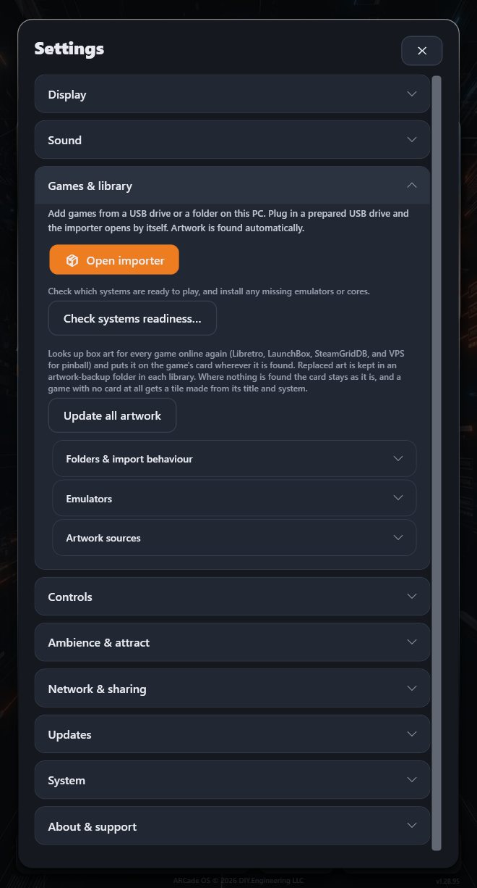
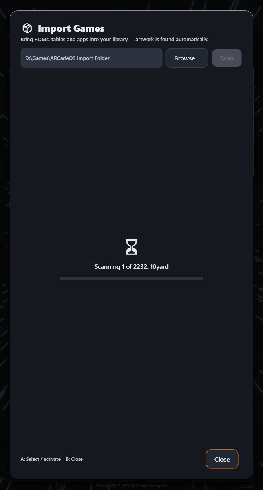
If you would rather skip the review step, or stop the importer opening on its own, see Folders & import behaviour.
Systems readiness
Settings → Games & library → Check systems readiness… lists every system in your library with its status: Ready, Needs core, Needs BIOS, Not installed or Manual setup, with advice for each. Anything ARCadeOS can fix has an Install button. Press Re-check after fixing something.
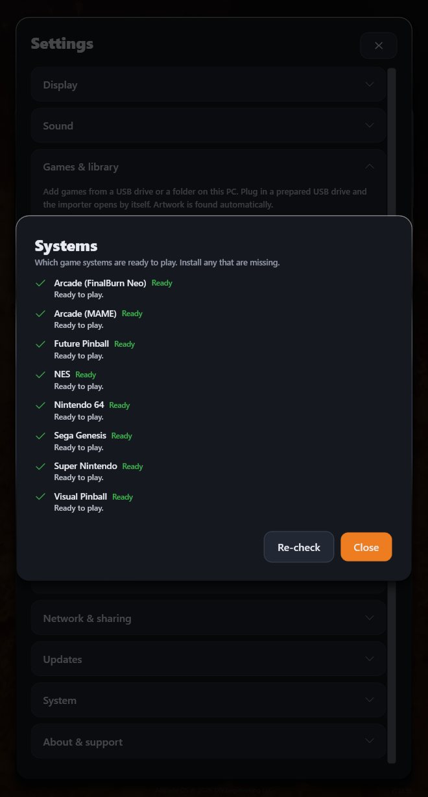
Artwork
Artwork comes from public databases (Libretro, LaunchBox, SteamGridDB, and VPS for pinball tables). Most of it is found without any setup. For the widest coverage you can add your own free API keys for RAWG and SteamGridDB in Settings → Games & library → Artwork sources; each has a Get a free key… button.
Update all artwork (in Settings → Games & library) looks up box art for every game again. A progress line shows how far it has got, and a summary appears at the end. Nothing is lost: art it replaces is kept in an artwork-backup folder in each library, where nothing better is found the existing card is kept, and a game with no card at all gets a tile made from its title and system.
To fix a single game, use Edit art & details → Find on that game instead.
7Settings, section by section
Settings is organised into nine sections, ordered by how often people use them. The specialist controls are folded away inside each section, so the list stays short.
Open Settings with Start from anywhere (or the Settings button). Move with the stick, open a section with A, change a value with left / right, and back out with B. Changes take effect immediately — there is no Save button.
Tip: click any screenshot in this manual to see it full size.
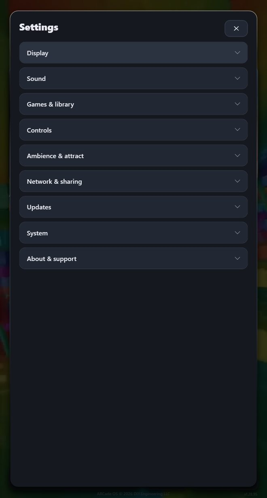
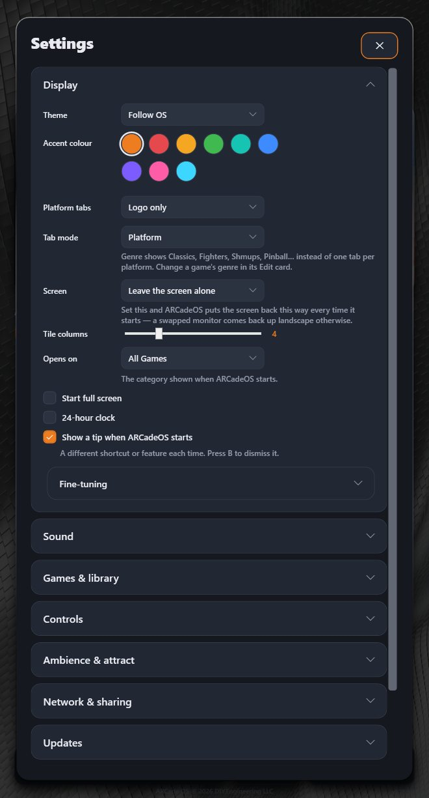
Display
| Setting | What it does |
|---|---|
| Theme | Follow OS, Light or Dark. |
| Accent colour | Nine colours. Re-themes the whole frontend in one press — buttons, highlights, focus rings. |
| Platform tabs | How system tabs look: Logo + Text, Logo only, or Text only. |
| Tab mode | Platform (a tab per system) or Genre (Classics, Fighters, Shmups, Pinball…). See Categories & genres. |
| Screen | Sets the screen’s orientation every time ARCadeOS starts: Leave the screen alone, Portrait (rotated left or right), Landscape, or Landscape (upside down). Apply now applies it straight away. Useful if a replaced monitor comes back up the wrong way round. |
| Tile columns | How many game tiles fit across the grid (2–10). |
| Opens on | The tab shown when ARCadeOS starts, or (Last used). |
| Start full screen | Starts ARCadeOS full screen. |
| 24-hour clock | Shows the time as 14:30 instead of 2:30 PM. |
| Show a tip when ARCadeOS starts | Turns startup tips on or off. |
| Fine-tuning (folded) | Card shadow and Edge glow strength. |
Sound
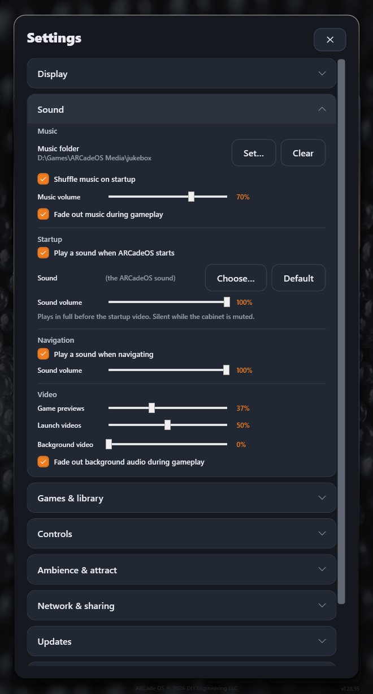
| Setting | What it does |
|---|---|
| Music | |
| Music folder | The folder of music the jukebox plays. Set… to choose, Clear for no music. |
| Shuffle music on startup | Starts at a random track each time. |
| Music volume | Jukebox loudness. |
| Fade out music during gameplay | Silences the jukebox while a game is running. |
| Startup | |
| Play a sound when ARCadeOS starts | A start-up sound, played in full before the start-up video. Silent while the cabinet is muted. |
| Sound | Choose… your own sound file, or Default for the ARCadeOS sound. |
| Sound volume | Start-up sound loudness. |
| Navigation | |
| Play a sound when navigating / Sound volume | The soft clicks as you move around and open cards. |
| Video | |
| Game previews | Volume of preview videos (the hero card plays them muted; attract mode and the editor use this). |
| Launch videos | Volume of the clip that plays while a game starts. |
| Background video | Volume of the background video (only shown when one is set). |
| Fade out background audio during gameplay | Silences the background video while a game is running. |
Games & library
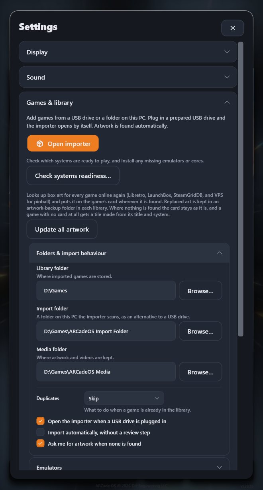
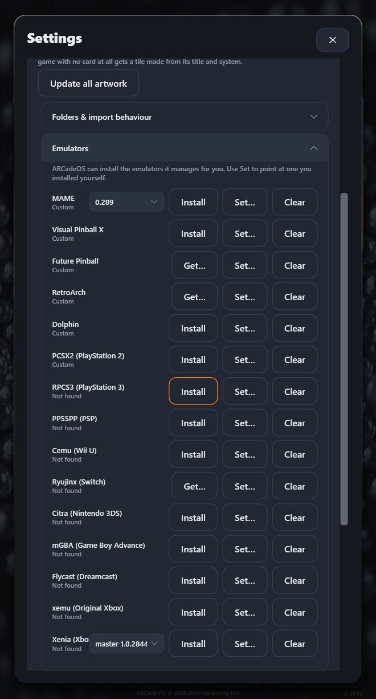
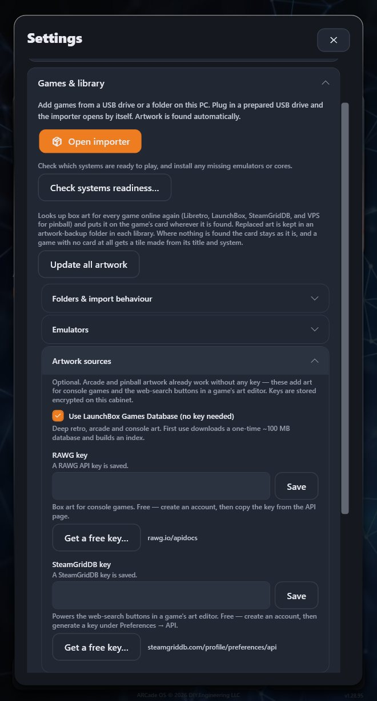
| Setting | What it does |
|---|---|
| Open importer | Opens the importer. See Adding games. |
| Check systems readiness… | Opens the Systems card. |
| Update all artwork | Looks up art for every game again. See Artwork. |
| Folders & import behaviour (folded) | |
| Library folder | Where imported games are stored. |
| Import folder | A folder on the cabinet the importer scans, as an alternative to a USB drive. |
| Media folder | Where artwork and videos are kept. |
| Duplicates | What to do when a game is already in the library: Skip, Overwrite or Keep both. |
| Open the importer when a USB drive is plugged in | The automatic USB import described above. |
| Import automatically, without a review step | Skips the review list and imports everything found. |
| Ask me for artwork when none is found | Offers the image picker for games no database knows. |
| Emulators (folded) | |
| One row per emulator | Its status, a version picker where several versions are available, Install (or Get… for ones you download yourself), Set… to point at a copy you installed, and Clear. |
| Artwork sources (folded) | |
| Use LaunchBox Games Database | No key needed; a one-time download of about 100 MB that greatly improves arcade and console artwork. |
| RAWG key / SteamGridDB key | Optional free keys for more console and PC artwork. Type the key and press Save; Get a free key… opens the sign-up page. Keys are stored encrypted on the cabinet. |
Controls
Seven folded panels. Your cabinet ships with these already set to match its control panel; you only need them if you add hardware or prefer a different layout.
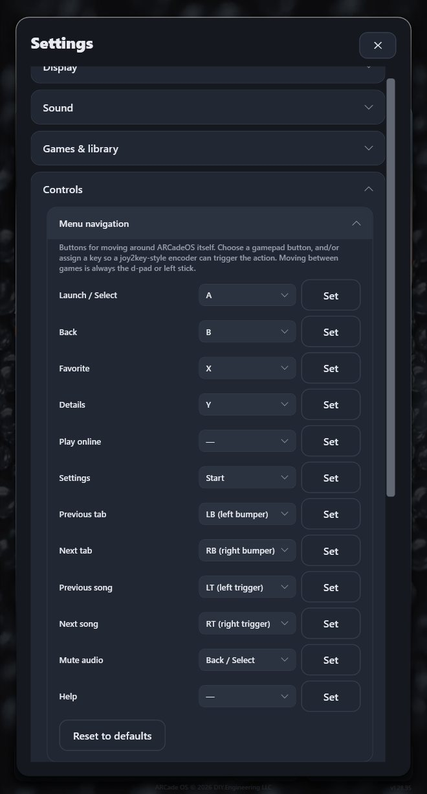
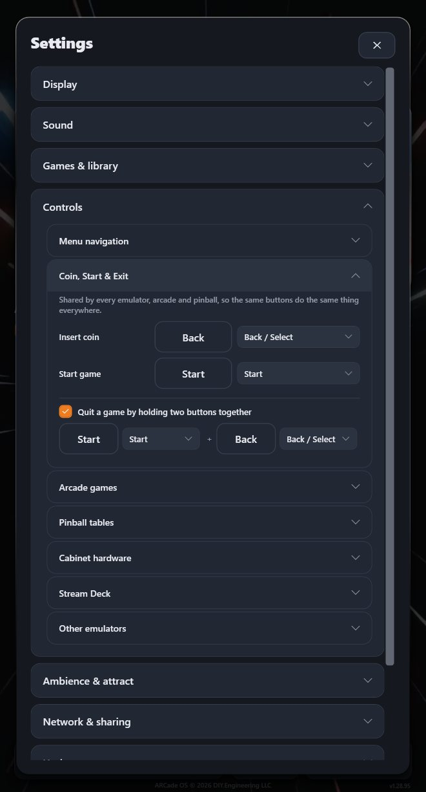
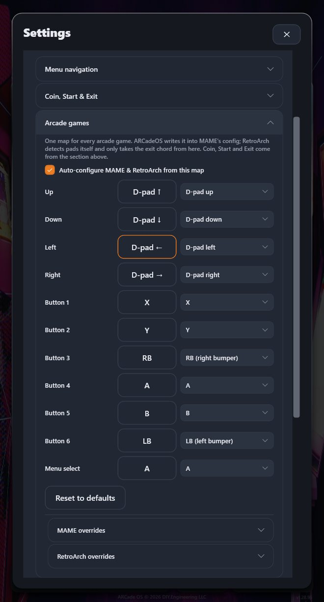
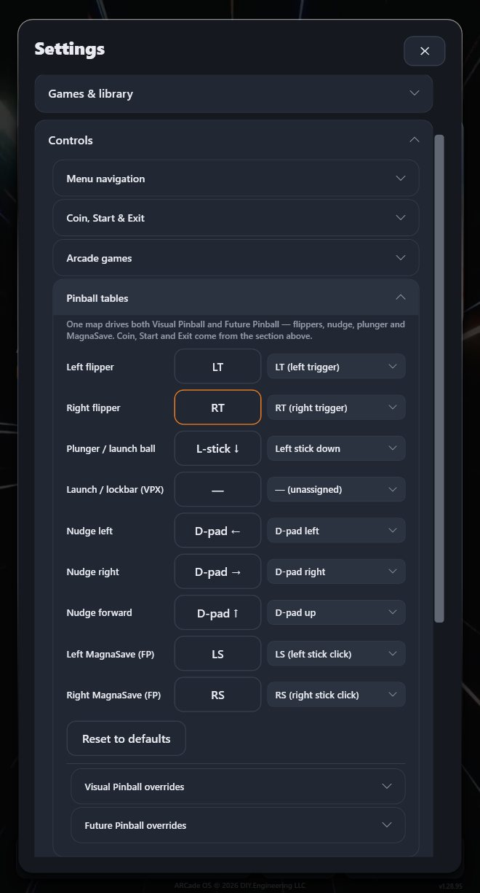
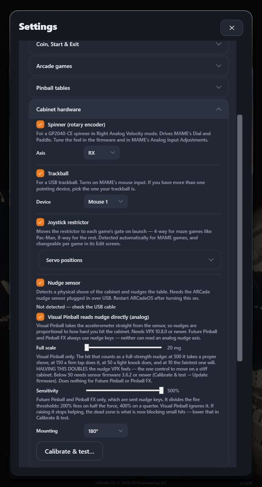
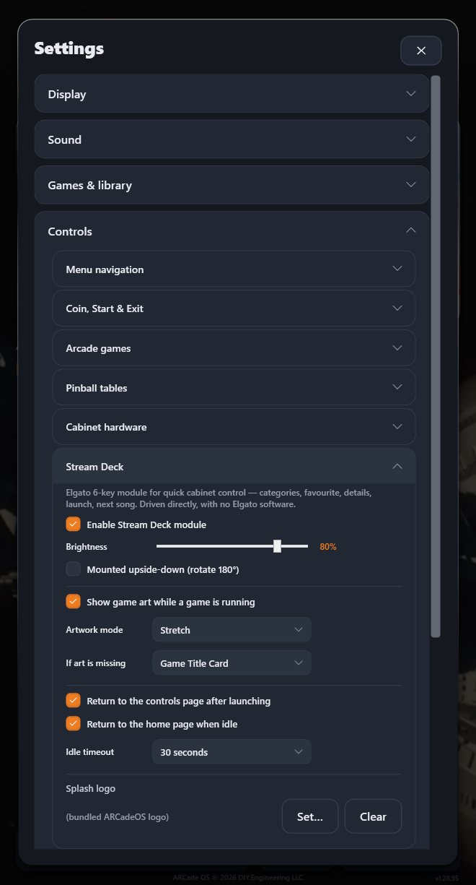
| Panel | What it is for |
|---|---|
| Menu navigation | The buttons that drive ARCadeOS itself: Launch / Select, Back, Favorite, Details, Play online, Settings, Previous / Next tab, Previous / Next song, Mute audio, Help. For each, pick a controller button from the list, and/or press Set and press a keyboard key — useful for extra panel buttons, encoders or joy2key-style devices that send keys. Picking a button another action already uses swaps the two. Reset to defaults restores the standard map. Moving is always the stick or d-pad. |
| Coin, Start & Exit | Shared by every emulator and pinball program, so the same buttons do the same thing everywhere. Insert coin (default Back), Start game (default Start), and Quit a game by holding two buttons together (default Start + Back). |
| Arcade games | One map for every arcade game: the joystick and Buttons 1–6 plus Menu select. With Auto-configure MAME & RetroArch from this map ticked, ARCadeOS writes it into MAME’s configuration and RetroArch for you. MAME overrides and RetroArch overrides (folded) change a single input in one program only. |
| Pinball tables | One map for Visual Pinball and Future Pinball: Left / Right flipper, Plunger, Launch / lockbar, Nudge left / right / forward, and Left / Right MagnaSave. Folded overrides let you adjust either program separately or turn gamepad input off for it. |
| Cabinet hardware | Spinner, trackball, joystick restrictor and nudge sensor. See section 8. |
| Stream Deck | The six-key Stream Deck module. See Stream Deck. |
| Other emulators | MAME and RetroArch are set up from the maps above. Each row here has an Open setup button that opens that emulator’s own control setup, for fine-tuning something ARCadeOS doesn’t cover. |
Ambience & attract
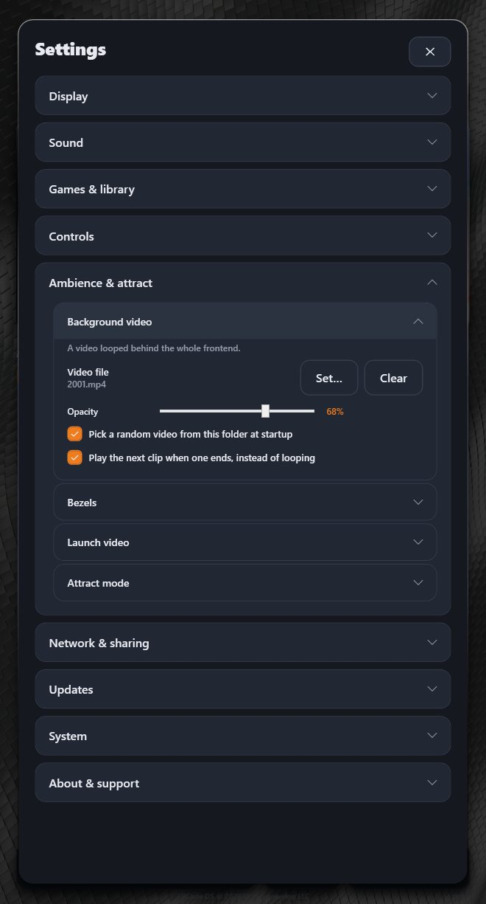
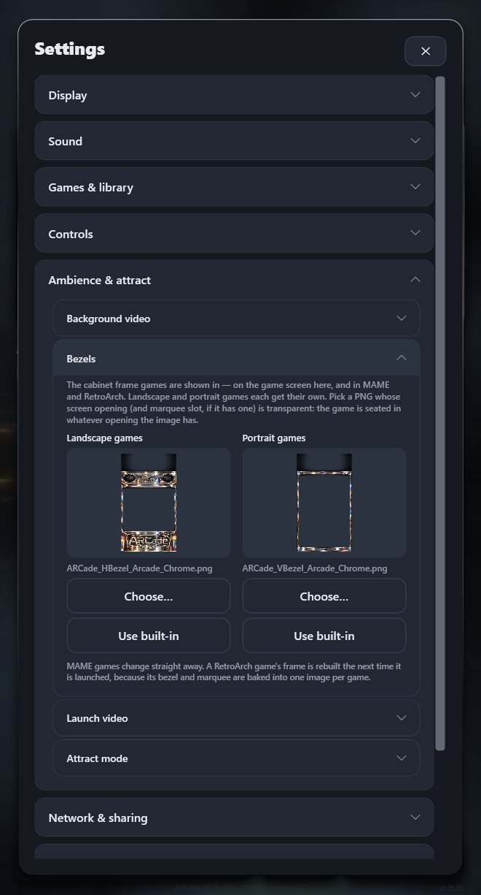
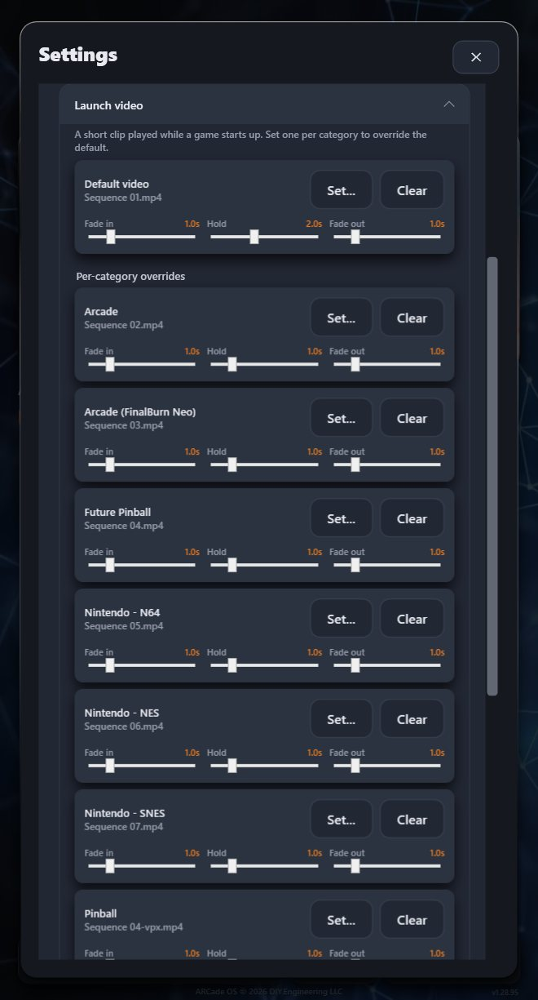
| Panel | What it is for |
|---|---|
| Background video | A video looped behind the whole frontend. Video file (Set… / Clear), Opacity, Pick a random video from this folder at startup, and Play the next clip when one ends, instead of looping. |
| Bezels | The cabinet frame games are shown in — on the hero card, in attract mode, and in MAME and RetroArch while you play. Landscape and portrait games each get their own: Choose… picks a PNG whose screen opening (and marquee slot, if any) is transparent; Use built-in goes back to the ARCade frame. MAME games change straight away; a RetroArch game’s frame is rebuilt the next time it launches. |
| Launch video | The short clip played while a game starts. A Default video plus optional Per-category overrides (a different clip for pinball, NES, and so on), each with Fade in, Hold and Fade out times. |
| Attract mode | Play an attract loop when idle and Start after (1–30 minutes). See Attract mode. |
Network & sharing
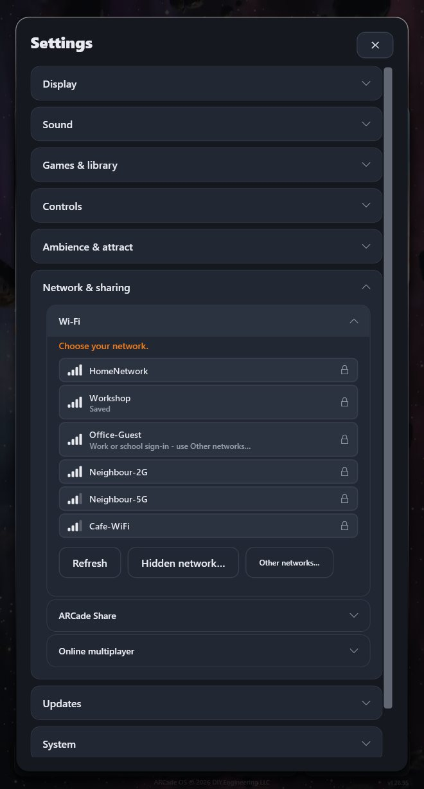
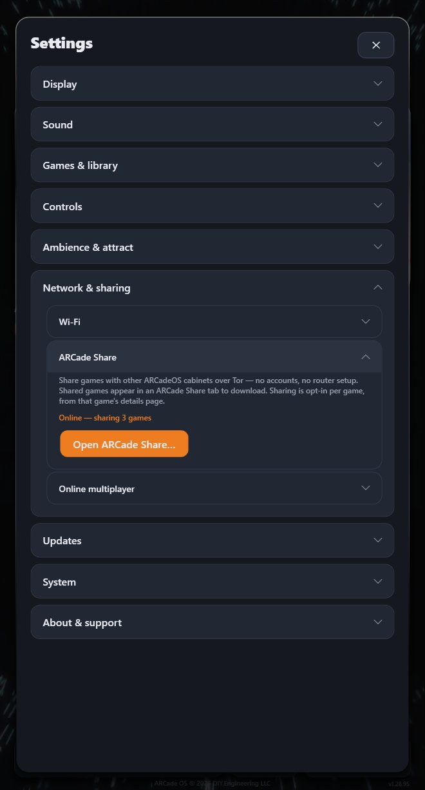
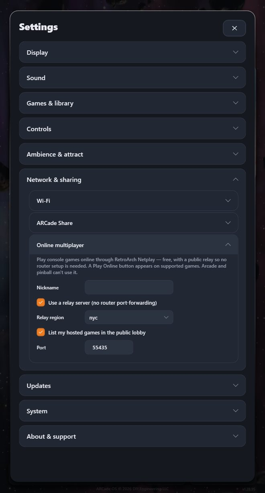
| Panel | What it is for |
|---|---|
| Wi-Fi | Join or change Wi-Fi networks from the controls, exactly as in the setup wizard: press A on a network, type the password with the on-screen keyboard, then Connect. Refresh rescans; Hidden network… lets you type a network name; Other networks… opens the Windows Wi-Fi panel. If Windows needs location access to list networks, a Location settings… button appears. |
| ARCade Share | Current status and Open ARCade Share…. See section 6. |
| Online multiplayer | Nickname shown to other players; Use a relay server (no router port-forwarding needed — leave on); Relay region (pick the nearest); List my hosted games in the public lobby; and the Port used when not relaying. |
Updates
The version this cabinet is running, Check for updates, and the three automatic-update switches. See section 10.
System
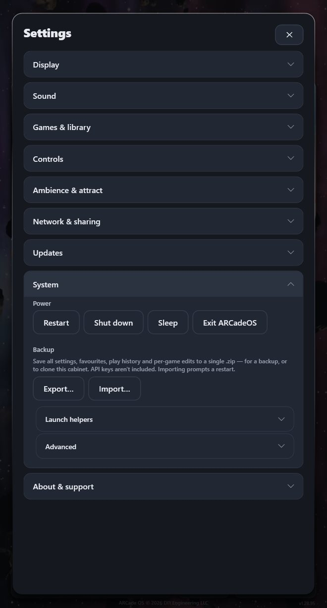
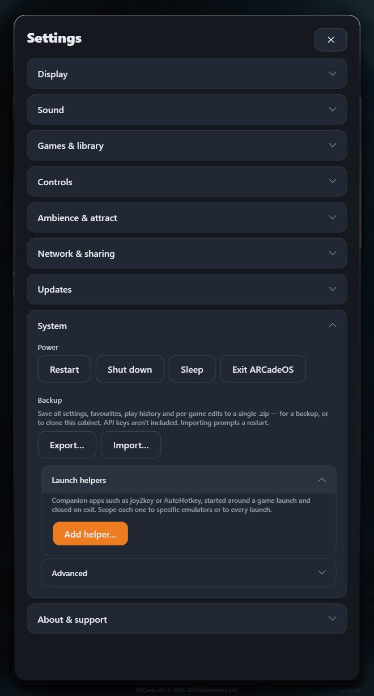
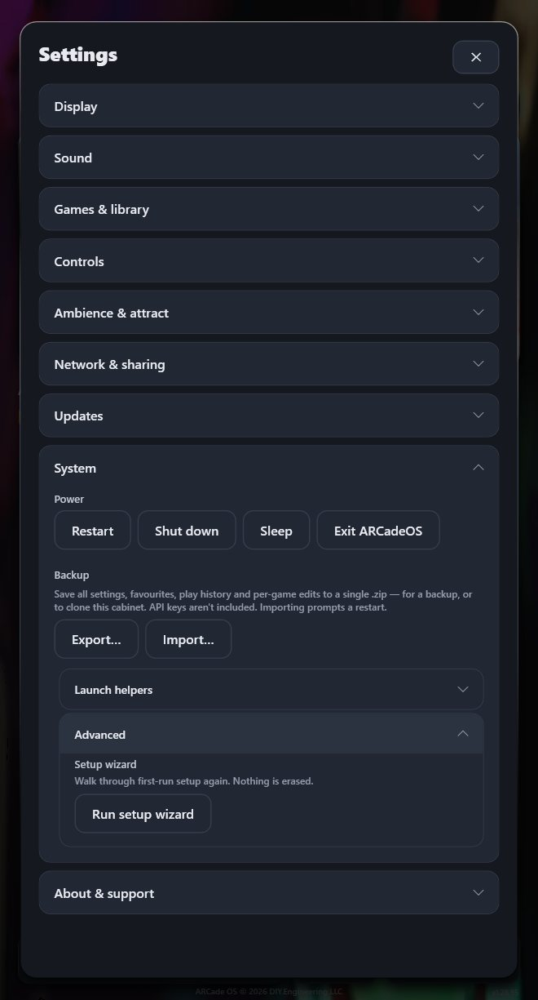
| Setting | What it does |
|---|---|
| Power | Restart, Shut down and Sleep the cabinet, or Exit ARCadeOS to the Windows desktop (for maintenance; it starts again at the next power-on). |
| Startup | On a cabinet: Start ARCadeOS when the cabinet powers on and Restart ARCadeOS automatically if it closes. Leave both on. |
| Backup | Export… saves all settings, favourites, play history and per-game edits to a single .zip — a backup, or a way to copy your setup to another cabinet. Import… restores one (then asks to restart). API keys are not included. |
| Launch helpers (folded) | Companion programs, such as joy2key or AutoHotkey scripts, started around a game launch and closed when it exits. Add helper… lets you choose the program, its arguments, whether it runs before or after the game starts, and which emulators it applies to. |
| Advanced (folded) | Run setup wizard re-runs the wizard without erasing anything. On a cabinet you will also find Re-apply optimizations…, which re-applies the cabinet’s Windows tuning, and Reset to a normal PC…, which removes it. |
This turns the cabinet back into an ordinary Windows PC (no automatic start, normal desktop). It asks twice and needs administrator approval. Only use it if DIY Engineering support asks you to.
About & support
Your ARCadeOS version and cabinet name; Run diagnostics; the opt-in Send health reports to DIY Engineering for support switch; buttons for the DIY Engineering Website, YouTube, Support page and this User manual; and the legal and data-source notices. See section 11.
8Cabinet hardware
Beyond the joystick and buttons, the ARCade has a servo-switched joystick restrictor, a spinner, a precision plunger, a nudge sensor and a six-key Stream Deck. Their settings live in Settings → Controls → Cabinet hardware and → Stream Deck. They are set up at the factory; this section explains what each does and what you can change.
Joystick restrictor (4-way / 8-way)
Many classic games were built for a 4-way joystick that physically cannot move diagonally — Pac-Man is much easier to steer that way. Most later games want the full 8-way stick. The ARCade’s joystick has a small servo that switches its gate between the two, and ARCadeOS sets it automatically every time a game launches.
- Which way each game uses is detected for MAME games when they are imported; everything else defaults to 8-way. To change one game, open Details → Edit art & details → Joystick. The details screen shows the current value (“Joystick: 4-way”).
- To switch by hand, press the 4/8 Way key on the Stream Deck (on the Tools page, and on the page shown during a game). It also remembers the new setting for the running game.
- To turn the feature off, untick Joystick restrictor in Settings → Controls → Cabinet hardware.
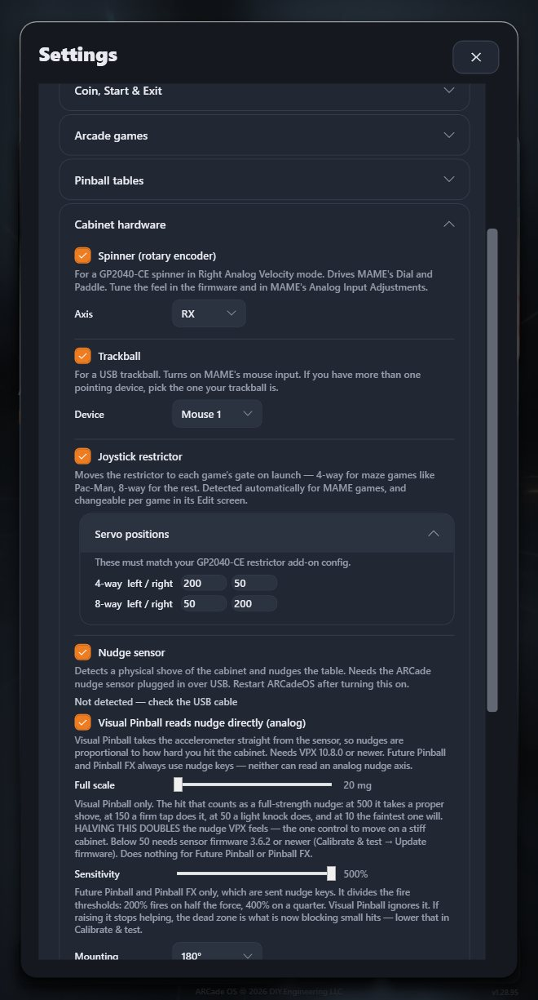
ARCadeOS tells the controller which gate it wants with a short, specific rumble command (it never vibrates anything). The folded Command values panel under the restrictor (called Servo positions in versions before 1.28.96) holds the four values for that message: 4-way left / right (200 / 50) and 8-way left / right (50 / 200). They are not servo positions, and they must match the XInput Rumble Command Signatures in the controller’s Rumble Restrictor add-on (section 9). Leave them alone unless you have changed them there.
Spinner & trackball
| Setting | What it does |
|---|---|
| Spinner (rotary encoder) | The 360-step spinner, read by the controller board and sent to Windows as a fast-reacting stick axis. With this ticked, MAME uses that axis for Dial and Paddle games (Tempest, Arkanoid, Tron). Axis must match the axis set in the controller (RX by default). Fine-tune the feel in the firmware (section 9) and in MAME’s own Analog Input Adjustments menu. |
| Trackball | For a USB trackball, if one is fitted. It is a separate USB device, not part of the controller board. Turns on MAME’s mouse input; Device picks which mouse is the trackball if there is more than one. |
Nudge sensor
The ARCade’s nudge sensor is a small motion sensor with its own round display, fixed inside the cabinet and connected over USB. When you shove the cabinet during a pinball game, it tells the table which way and how hard — just like nudging a real machine.
| Setting | What it does |
|---|---|
| Nudge sensor | Turns the sensor on. The line below says whether it is connected. Restart ARCadeOS after turning it on. |
| Visual Pinball reads nudge directly (analog) | Visual Pinball takes the sensor’s motion directly, so nudges are as strong as your shove. Future Pinball and Pinball FX always receive nudge keys. |
| Full scale (Visual Pinball) | How hard a shove counts as a full-strength nudge. Lower = more sensitive. |
| Sensitivity (Future Pinball, Pinball FX) | Scales the thresholds at which a shove sends a nudge key. |
| Mounting | The angle the sensor is mounted at, so “left” means left. |
| Calibrate & test… | Opens the live view below. |
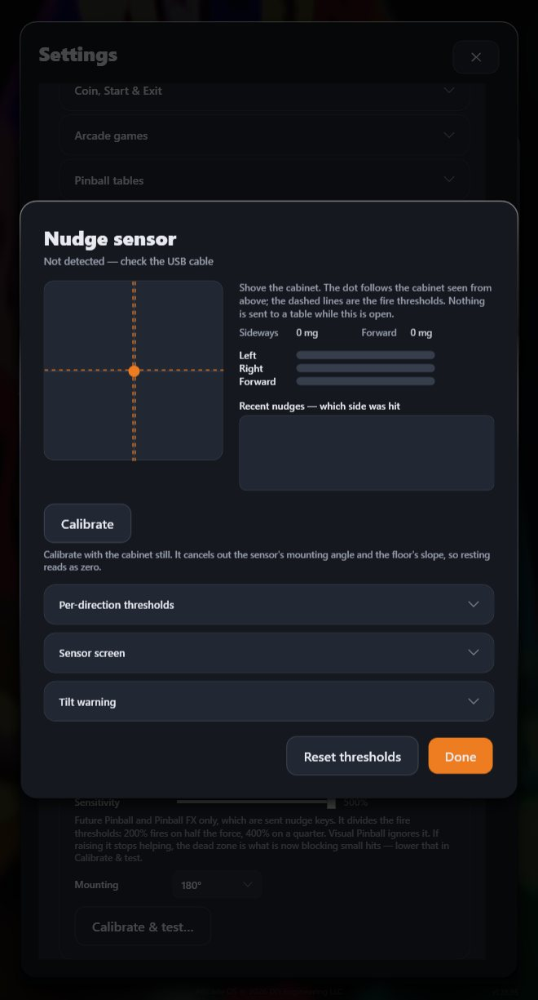
In Calibrate & test: keep the cabinet still and press Calibrate so a resting cabinet reads as zero (it cancels the sensor’s mounting angle and any slope in your floor). Per-direction thresholds sets how hard a shove must be in each direction, the dead zone, smoothing and key hold time. Sensor screen controls what the sensor’s own display shows (and whether a bump on the cabinet wakes it from attract mode). Tilt warning tracks repeated hard shoves like a real machine’s tilt bob. Reset thresholds returns to the defaults; Update firmware updates the sensor itself.
Stream Deck
The six-key Stream Deck on the control panel is a shortcut panel for the cabinet. Its keys change page as you use them; the last key on each page is Back.
| Page | Keys |
|---|---|
| Home | Game · Favorites · Music · System · Tools · Help |
| Game | Play · Details · Favorite · Playtime · Delete · Back |
| Favorites | Favorites · Recent · Most Played · Pinball · Arcade · Back (jump straight to a tab) |
| Music | Previous · Next · Play/Pause · Volume + · Volume − · Back |
| System | Shutdown · Restart · Sleep · Exit Game · Windows · Back |
| Tools | Settings · Import · 4/8 Way · Update · Library · Back |
| Help | Game · System · Music · Favorites · Tools · Back — each shows a card on the main screen explaining that page; press the same key again to close it. |
| In a game | Shown automatically while a game runs: Previous · Next · Play/Pause · Mute · 4/8 Way · Exit Game |
Its settings: Enable Stream Deck module; Brightness; Mounted upside-down (rotate 180°); Show game art while a game is running with Artwork mode (Stretch, Fill, Fit) and If art is missing (Game Title Card, Platform Card, ARCadeOS Card); Return to the controls page after launching; Return to the home page when idle with an Idle timeout; and a Splash logo.
9GP2040-CE controller setup
The joystick, buttons, spinner and plunger on your control panel are all wired to one controller board running GP2040-CE, open-source controller firmware, in an ARCade build made by DIY Engineering. This section explains how it is set up for the ARCade and how to change it safely.
Probably not. The controller is configured at the factory and ARCadeOS is set up to match it. Read on if you are curious, if you are replacing or adding hardware, if DIY Engineering support has asked you to check something, or if the joystick restrictor or spinner needs adjusting.
What the board does
The board reads every switch, the spinner and the plunger, and presents them to Windows as a single Xbox 360 controller (GP2040-CE’s XInput mode). That one choice is why everything just works: Windows, ARCadeOS, MAME, RetroArch and the pinball programs all understand an Xbox controller with no drivers, it is read every millisecond, and it is the only mode that can receive the command that moves the joystick restrictor.
The ARCade build of GP2040-CE adds the following to the standard firmware:
- Rumble Restrictor add-on — drives the 4-way / 8-way servo when ARCadeOS asks.
- Spinner velocity modes for the rotary encoder, so the spinner behaves like an arcade dial.
- ARCade display layouts (Curvecade Left / Right) for the controller’s small screen, showing the spinner and plunger.
- LED animation settings, and the ability for one action to light several buttons.
- Reliability: settings stored in two copies, safer reboots mid-game, and Restart diagnostics on the configurator’s home page.
- Safer boot combos: start-up button combinations only count on a real power-on and must be held for 2 seconds, so holding Start + Back to quit a game can never send the board into a setup mode.
How the panel is mapped
GP2040-CE names its inputs B1–B4, L1/R1, L2/R2, S1/S2 and so on. The table shows what each becomes in Windows and how ARCadeOS and your games use it with the cabinet’s default maps.
| GP2040-CE | Xbox (XInput) | In ARCadeOS menus | Arcade games | Pinball |
|---|---|---|---|---|
| Up / Down / Left / Right | D-pad | Move | Joystick | Nudge (Left / Right / Up) |
| B1 | A | Launch / Select | Button 4 | — |
| B2 | B | Back | Button 5 | — |
| B3 | X | Favourite | Button 1 | — |
| B4 | Y | Details | Button 2 | — |
| R1 | RB | Next tab | Button 3 | — |
| L1 | LB | Previous tab | Button 6 | — |
| R2 | RT | Next song | — | Right flipper |
| L2 | LT | Previous song | — | Left flipper |
| S1 | Back | Mute | Insert coin | Exit (with Start) |
| S2 | Start | Settings | Start game | Exit (with Back) |
| L3 / R3 | Stick clicks | — | — | Left / Right MagnaSave |
| Plunger | Left stick, vertical | — | — | Plunger (pull = down) |
| Spinner | Right stick, horizontal (RX) | — | Dial / paddle | — |
| A1 | Guide | Not used | — | — |
Holding S2 + S1 (Start + Back) quits any game. Which physical GPIO pin each button is wired to is shown on the configurator’s Pin Mapping page; it is set at the factory and only needs changing if you rewire a button. If a button does the wrong thing in ARCadeOS only, change the ARCadeOS map rather than the firmware.
Opening the web configurator
All of the controller’s settings are changed in its web configurator, a small website the board serves over its own USB cable. While it is open the board is not a controller, so you will need a USB keyboard and mouse plugged into the cabinet (or move the controller’s USB cable to a laptop).
- In ARCadeOS, choose Settings → System → Exit ARCadeOS to get to the Windows desktop.
- Put the board into web-config mode, either way:
- At power-on: hold Start (S2) and keep holding it for 2 seconds while the cabinet (or just the controller’s USB cable) is powered on.
- While running: hold Start + X + Y (S2 + B3 + B4) for 4 seconds.
- Windows sees a new network adapter. Open a web browser and go to http://192.168.7.1.
- When you are finished, choose Reboot → Controller in the configurator’s top bar. The board becomes a controller again, then restart the cabinet (Restart from the Windows Start menu, or power it off and on) to return to ARCadeOS.
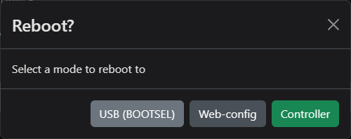
Nothing changes until you press Save on that page. Before changing anything, make a backup (below) so you can always get back to the factory setup.
Recommended settings
These are the values the ARCade relies on. If something isn’t working, check them first, under Settings in the configurator’s top bar.
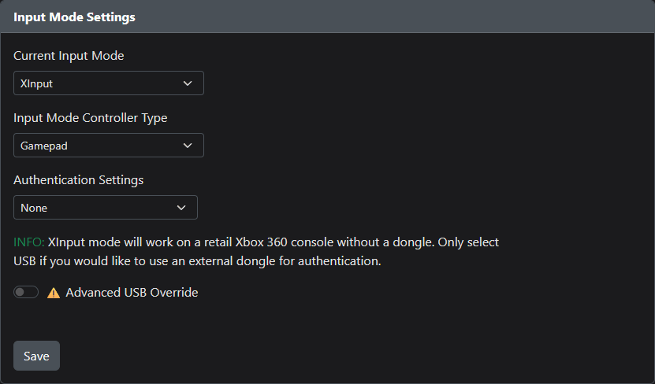
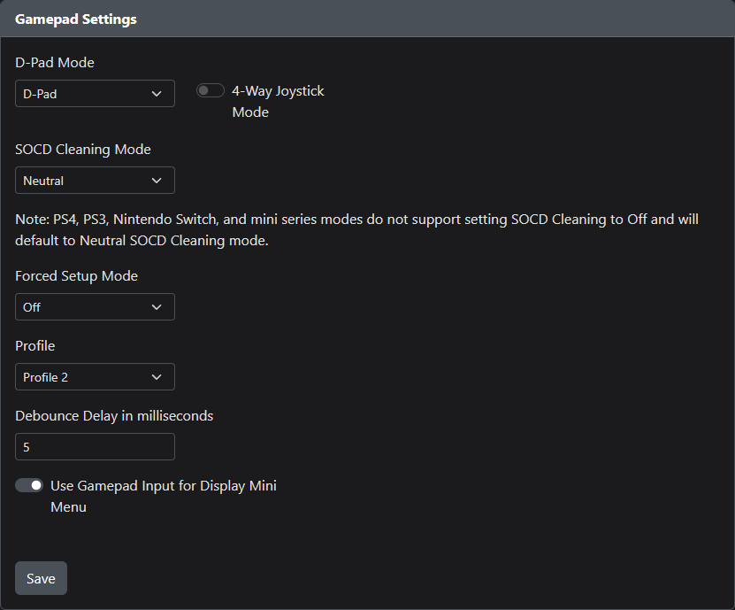
| Setting | ARCade value | Why |
|---|---|---|
| Current Input Mode | XInput | Required. ARCadeOS, the emulators and the joystick restrictor all depend on it. Any other mode and the restrictor stops working. |
| Input Mode Controller Type | Gamepad | Standard controller. |
| D-Pad Mode | D-Pad | The joystick is read as a d-pad, which is what ARCadeOS, MAME and the pinball nudge keys expect. |
| 4-Way Joystick Mode | Off | The ARCade switches 4-way mechanically with the restrictor servo, so a software 4-way filter isn’t needed. |
| SOCD Cleaning Mode | Neutral | What happens if opposite directions are pressed at once. Neutral is the safe default. |
| Forced Setup Mode | Off | Leaves web-config and mode switching available. |
| Debounce Delay | 5 ms | Filters switch bounce without adding noticeable lag. |
| Boot Input Modes | Leave as is | Holding a button at power-on can start the board in another mode (e.g. Switch or PS4). If the cabinet ever stops responding after a power-on with a button held, power off and on again without touching anything. |
Hotkeys
GP2040-CE has built-in hotkeys — button combinations that change controller settings on the fly. Several start with S1 + S2, which is the same pair as the ARCade’s exit buttons: for example S1 + S2 + Left switches the joystick to act as an analog stick. So when quitting a game, let go of the joystick while you hold Start + Back.
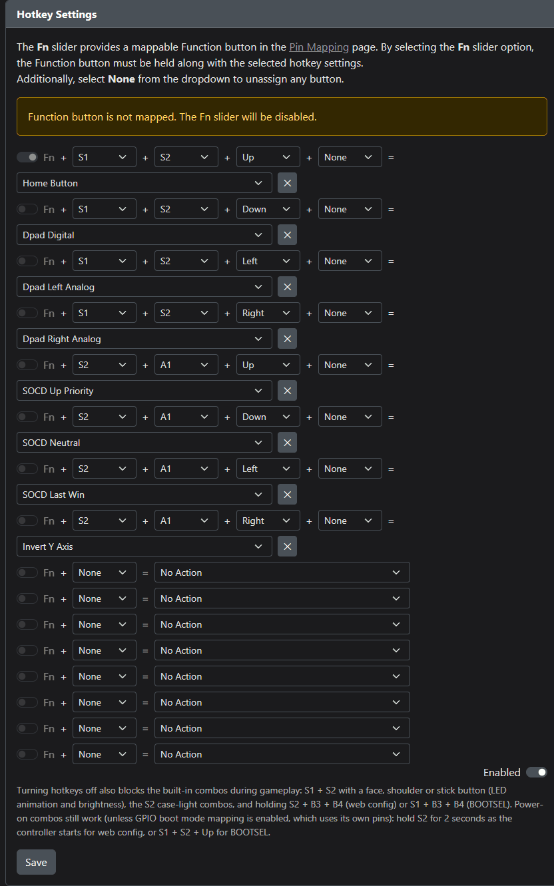
If a hotkey ever triggers by accident (the stick starts behaving strangely in menus), restart the cabinet — or, to stop it happening, switch hotkeys off with the Enabled switch at the bottom of Hotkey Settings and press Save. With hotkeys off, the power-on combinations above still work.
Pin mapping, display and lighting
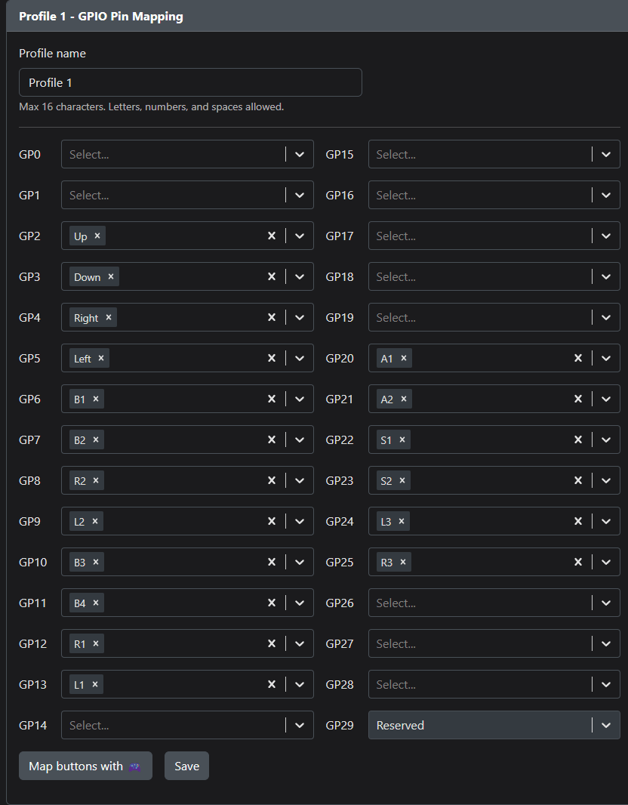
- Pin Mapping assigns each GPIO pin to a button. Only change it if you have rewired something.
- Display Configuration → Button Layout: Curvecade Left and Curvecade Right are the ARCade layouts for the controller’s small screen.
- LED Configuration controls the button lighting: colours, animation effect, brightness, the colour a button flashes when pressed, and Turn Off When Suspended. The cabinet’s ambient lighting is separate and isn’t set here.
Rumble Restrictor add-on
This is the firmware half of the joystick restrictor. ARCadeOS sends a short “rumble” command with two specific motor values; the add-on recognises the pattern and moves the servo to the matching gate. Find it under Configuration → Add-Ons → Rumble Restrictor.
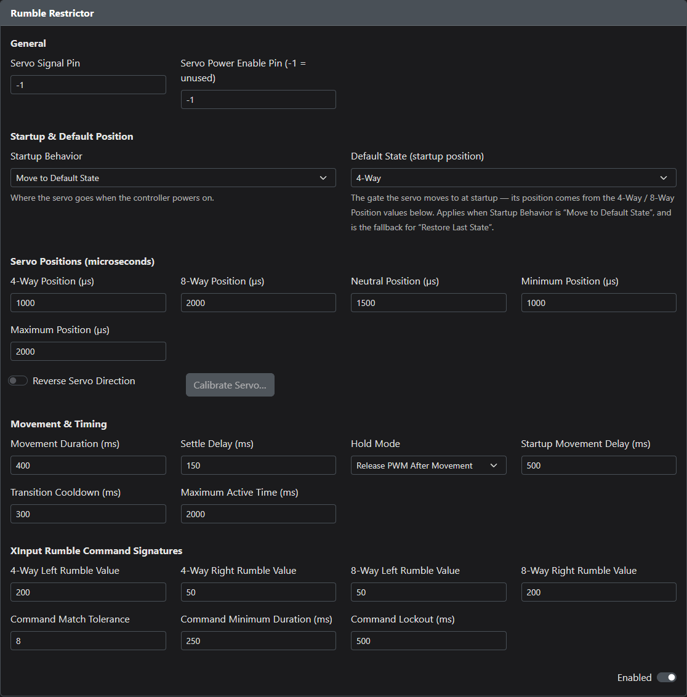
| Field | Default | Meaning |
|---|---|---|
| General | ||
| Servo Signal Pin | −1 | The GPIO the servo’s signal wire is connected to. The add-on does nothing until this is set. |
| Servo Power Enable Pin | −1 (unused) | Optional pin that switches servo power on only while it moves. |
| Startup & default position | ||
| Startup Behavior | Move to Default State | Where the servo goes at power-on: Move to Default State, Restore Last State, Wait for Host Command, or Move to Neutral. |
| Default State | 4-Way | The start-up gate, and the fallback for Restore Last State. |
| Servo positions (microseconds) | ||
| 4-Way / 8-Way Position | 1000 / 2000 | The servo pulse for each gate. Set these with Calibrate Servo…. |
| Neutral, Minimum, Maximum Position | 1500 / 1000 / 2000 | Middle position and the safe travel limits. |
| Reverse Servo Direction | Off | Turn on if 4-way and 8-way come out swapped. |
| Movement & timing | ||
| Movement Duration / Settle Delay | 400 / 150 ms | How long a move takes and how long to wait for it to settle. |
| Hold Mode | Release PWM After Movement | Whether the servo is held after moving. Releasing (or cutting power) stops it buzzing. |
| Startup Movement Delay | 500 ms | Wait after power-on before the first move. |
| Transition Cooldown / Maximum Active Time | 300 / 2000 ms | Minimum gap between moves, and a safety cut-off for a single move. |
| XInput rumble command signatures | ||
| 4-Way Left / Right Rumble Value | 200 / 50 | The command that means “go 4-way”. |
| 8-Way Left / Right Rumble Value | 50 / 200 | The command that means “go 8-way”. |
| Command Match Tolerance | 8 | How close the received values must be. |
| Command Minimum Duration / Lockout | 250 / 500 ms | How long a command must be held to count, and how long new commands are ignored after a move. |
The four Rumble Value numbers must match the values in ARCadeOS’s Settings → Controls → Cabinet hardware → Joystick restrictor panel. If you change one side, change the other. ARCadeOS always holds a command for 350 ms and waits at least 1.2 seconds between different gates, which suits the default timings — don’t lengthen the firmware’s timings much beyond them.
Calibrating the servo
- With a Servo Signal Pin set, press Calibrate Servo….
- Press Move to 4-Way. Use the − / + buttons (10 µs steps) until the gate sits cleanly in its 4-way position, then Save as 4-Way.
- Do the same with Move to 8-Way and Save as 8-Way.
- Close the dialog (this cuts servo power), then press Save on the add-on page.
Testing it
- Reboot the board to Controller and start ARCadeOS.
- Launch a 4-way game such as Pac-Man — the gate should click over as the game starts. Quit, and launch an 8-way game; it should switch back.
- Or press 4/8 Way on the Stream Deck’s Tools page to toggle it by hand.
Two moves in quick succession: the second is ignored if it arrives within about a second of the first. That is deliberate, to protect the servo — wait a moment and try again.
Spinner & plunger
The spinner uses the Rotary Encoders add-on (Configuration → Add-Ons). The ARCade build adds the Velocity control modes, which report how fast the spinner is turning and re-centre when it stops — the behaviour arcade dial games expect.
| Field | For the ARCade spinner | Meaning |
|---|---|---|
| Pin A/CLK, Pin B/DT | As wired | The spinner’s two signal pins. |
| Encoder Type | Optical / Continuous | The spinner has no detents. |
| Pulses/Revolution (PPR) | 360 | In velocity mode this only scales the dial animation on the controller’s screen. |
| Counts per Step | 1 | Every edge counts — highest resolution. |
| Control Mode | Right Analog X — Velocity | Sends speed on the right stick’s X axis. Must match the Axis (RX) in ARCadeOS’s Spinner setting. |
| Velocity Full Scale | 200 (adjust to taste) | The spin speed that counts as full deflection. Lower = more sensitive. |
Tune the spinner in two places: Velocity Full Scale here sets the overall range, and MAME’s in-game menu (Analog Input Adjustments) sets per-game sensitivity.
The plunger reaches Windows as the controller’s left stick, vertical axis, with the rest position at the top and a full pull at the bottom. Visual Pinball reads it directly as an analog plunger; for Future Pinball, ARCadeOS turns a pull into the plunger key. If a pull works the wrong way round, the analog stick’s Invert option is in the Analog add-on (Configuration → Add-Ons).
Backup & restore
Before you change anything, save a copy of the controller’s setup: Configuration → Data Backup and Restoration.
- Backup To File: leave every box ticked and press Save. Keep the file somewhere safe, such as a USB stick.
- Restore From File: choose the sections to restore, press Load, pick your backup file, and then reboot to Controller.
Updating firmware
Firmware updates are rare and are supplied by DIY Engineering when needed. Only install the ARCade build
(a file named like GP2040-CE_0.8.48_Pico_DIY.uf2): the standard GP2040-CE download does not
contain the Rumble Restrictor or the spinner velocity modes. Your settings are kept across updates, but make
a backup first anyway.
- Put the board into USB (BOOTSEL) mode, any of these ways:
- in the web configurator, Reboot → USB (BOOTSEL);
- at power-on, hold Back + Start + Up (S1 + S2 + Up) for 2 seconds;
- while running, hold Back + X + Y (S1 + B3 + B4) for 4 seconds.
- A drive called RPI-RP2 appears in Windows. Copy the
.uf2file onto it. - The board restarts by itself as a controller with the new firmware. Check the version on the configurator’s home page.
The nudge sensor is a separate device with its own firmware; update it from ARCadeOS with Calibrate & test… → Update firmware.
Controller troubleshooting
| What you see | What to do |
|---|---|
| No controls work at all | The board may be in web-config or BOOTSEL mode, or started in another input mode because a button was held at power-on. Power the cabinet off and on without touching the panel. |
| The joystick restrictor never moves | Check, in order: Joystick restrictor is ticked in ARCadeOS; the board is in XInput mode; the Rumble Restrictor add-on is Enabled with a Servo Signal Pin set; and the four rumble values match on both sides. |
| 4-way and 8-way are swapped | Turn on Reverse Servo Direction, or re-calibrate the two positions. |
| The servo buzzes or jitters | Set Hold Mode to Release PWM After Movement or Disable Servo Power After Movement. |
| A plain controller buzzes when a game starts | That is the restrictor command on a controller without a restrictor. Untick Joystick restrictor in ARCadeOS. |
| The stick suddenly acts like an analog stick | A hotkey was triggered while holding Start + Back. Restart the cabinet; see Hotkeys. |
| Spinner too fast or too slow | Adjust Velocity Full Scale (lower = more sensitive), then fine-tune in MAME’s Analog Input Adjustments. |
| Spinner does nothing in MAME | The control mode’s axis (Right Analog X) must match the Spinner Axis (RX) in ARCadeOS, and the Spinner box must be ticked. |
| Plunger works backwards | Toggle the stick’s Invert option in the Analog add-on. |
| Settings didn’t stick | Press Save on each page before rebooting. The home page’s Restart Diagnostics shows if the last save was cut short. |
10Staying up to date
ARCadeOS updates itself. New features and fixes arrive over a secure, signed update feed, and there is nothing for you to download or install by hand.
Three switches control the whole thing, and all three are on by default:
- Check for updates when ARCadeOS starts
- Download updates in the background while idle — so the wait is already over by the time you are offered it
- Install downloaded updates when I exit
You can also check whenever you like with Check for updates. When an update is found you can Download it, Install now, or Install on exit. Installing shows a real progress bar, measured against the actual download rather than a guess, and the cabinet restarts into the new version. When an update is ready on its own, ARCadeOS offers Install & Restart or Later.
Updates never install while a game, an import or controller setup is running. The cabinet waits until you are done.
Release channel (folded) is set to Stable, which is what you want. Beta and Dev get new builds sooner but are less tested, and exist mainly for DIY Engineering’s own testing.
Updates replace the ARCadeOS software only. Your games, artwork, favourites, play history and settings are untouched.
11Care & troubleshooting
Diagnostics & one-tap repair
Settings → About & support → Run diagnostics checks the whole cabinet: ARCade Share, updates, each emulator, pinball components, RetroArch cores, artwork keys and free disk space. Each line gets a tick, a warning or a problem, with a plain-English explanation.
Most problems can be fixed from the same card with Fix N issues — ARCadeOS reinstalls a missing emulator or core for you. Re-run checks again. If something needs a human, use Copy report or Save report: that produces a complete support packet you can paste into an email to us, and Contact support opens our support page.
Sending health reports
On the same screen you can opt in to Send health reports to DIY Engineering for support. It is off by default. When on, your cabinet periodically sends only: its name, ARCadeOS version, how many games it shares, the pass / warning / problem counts from the check above with a short description of each, free disk space, and whether ARCade Share is connected. No file paths, no keys, no game titles, nothing personal — and it goes only to DIY Engineering, never to other cabinets. It lets us spot a problem on your cabinet before you have to tell us about it.
Backups
Settings → System → Backup → Export… saves your settings, favourites, play history and per-game edits to a single .zip file. Worth doing before any big change, and worth keeping a copy on a USB stick. The controller board has its own backup — see section 9.
Common problems
| What you see | What to do |
|---|---|
| A game will not start | Run Check systems readiness (Settings → Games & library). It names what is missing and usually installs it for you. |
| A game has the wrong artwork | Open the game’s details, choose Edit art & details, and use Find or Set…. Common with games that had several regional releases. |
| Lots of games have poor artwork | Add the free artwork keys, then run Update all artwork. |
| New games did not appear | Re-run the importer on the folder. Scanning twice is harmless — anything already in your library is skipped. |
| A game is in the wrong genre | Edit art & details → Genre. |
| The joystick goes diagonal in Pac-Man | Set the game to 4-way in Edit art & details → Joystick; see Joystick restrictor. |
| No sound | Check you are not muted (press Back; a speaker icon shows while muted), then the volumes in Settings → Sound. |
| No internet | Settings → Network & sharing → Wi-Fi. If the saved password stopped working, ARCadeOS asks you to type it again. |
| The screen is the wrong way round | Settings → Display → Screen, choose the right orientation, and Apply now. |
| ARCade Share says “Connecting…” |
Give it a couple of minutes on first use. If it stays there, your network may be blocking Tor — open Network blocking Tor? (bridges) in the ARCade Share panel and tick Always use bridges. |
| ARCade Share shows no other cabinets |
Normal unless another cabinet is switched on and sharing at the same time. Cabinets appear within a few minutes of coming online. |
| Pinball nudging doesn’t work | Check Nudge sensor says it is connected (Settings → Controls → Cabinet hardware), then use Calibrate & test…. |
| Controls don’t respond | See Controller troubleshooting. |
| The cabinet feels sluggish | Run Run diagnostics and check free disk space — a nearly full drive is the usual cause. |
| Something else | Run diagnostics, use Copy report, and send it to support@diy.engineering. |
12Support & contact
Your ARCade cabinet is handcrafted by DIY Engineering in Winter Garden, Florida, and backed by a twelve-month warranty. If something is not right, talk to us.
Email support
Attach a diagnostics report if you can — it tells us almost everything we need.
DIY Engineering
Custom product development and engineering, backed by 30+ years of experience.
This manual
arcadeos.updates.diy.engineering/manual.html
Always the current version. Use Print / Save PDF for a paper copy.
All of these links are also on your cabinet, in Settings → About & support.
13Quick reference
Worth printing on its own and keeping near the cabinet.
| To do this | Press this |
|---|---|
| Start the highlighted game | A, then A on Play |
| Go back | B |
| Favourite a game | X |
| See a game’s details | Y |
| Open Settings | Start |
| Open Help | Help button on screen |
| Next / previous category | RB / LB |
| Next / previous music track | RT / LT |
| Mute everything | Back |
| Jump to a letter | Push left from the first column, then up/down |
| Type text | A on a text box opens the keyboard |
| Insert coin / start (in a game) | Back / Start |
| Quit a running game | Hold Start + Back |
| Shut down | Hold Start + Back on the main screen, or Settings → System |
| Switch joystick 4-way / 8-way | 4/8 Way on the Stream Deck |
| Add games | Plug in a USB drive, or Settings → Games & library |
| Connect to Wi-Fi | Settings → Network & sharing → Wi-Fi |
| Fix a problem | Settings → About & support → Run diagnostics |
| Controller web configurator | Hold Start 2 s at power-on, then http://192.168.7.1 |